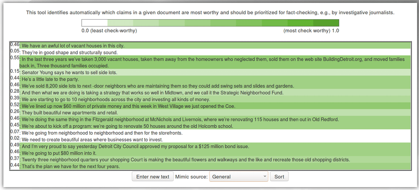

1. Jalees E-book Reader
Qatar Computing Research Institute
Jalees is an English and Arabic e-reader that supports ePub2, ePub3.
The Jalees Reader supports ebook files, from PDF to ePub, ePub2 and ePub3, including interactive content and embedded audio and video files.
Characteristics include a clean, simple design, an intuitive library offering Carousel and Tile modes, right-to-left and left-to-right user interfaces for reading, and a morphological search function for Arabic.
Jalees was developed by members of the Arabic Language Technologies team at the Qatar Computing Research Institute, in Doha, Qatar. Find out more about our research by visiting www.jaleesreader.com, or send an email to tellmemore@jaleesreader.com.
2. Community Question Answering in the Medical Domain
Qatar Computing Research Institute
a Demonstraction of the research done in:
Romeo, Salvatore, Giovanni Da San Martino, Yonatan Belinkov, Alberto Barrón-Cedeño, Mohamed Eldesouki, Kareem Darwish, Hamdy Mubarak, James Glass, and Alessandro Moschitti. "Language processing and learning models for community question answering in Arabic." Information Processing & Management (2017).
3. Fact-checking in Community Forums -Demo
Qatar Computing Research Institute
a Demonstraction of the research done in:
Mihaylova, Tsvetomila, Preslav Nakov, Lluis Marquez, Alberto Barron-Cedeno, Mitra Mohtarami, Georgi Karadzhov, and James Glass. "Fact checking in community forums." In Thirty-Second AAAI Conference on Artificial Intelligence. 2018.
4. ClaimRank
Qatar Computing Research Institute
A mutilingual ranking system that scores sentences in text based on their priority for fact-checking. To try the demo, visit : claimrank.qcri.org . This work is published as:
Jaradat, Israa, Pepa Gencheva, Alberto Barrón-Cedeño, Lluís Màrquez, and Preslav Nakov. "ClaimRank: Detecting Check-Worthy Claims in Arabic and English." In Proceedings of the 2018 Conference of the North American Chapter of the Association for Computational Linguistics: Demonstrations, pp. 26-30. 2018.

5. Proppy
Qatar Computing Research Institute
A propaganda detection system that scores news articles based on their liklihood of having propagandistic content. To try the demo, visit proppy.qcri.org . This work is published as:
Barrón-Cedeño, Alberto, Giovanni Da San Martino, Israa Jaradat, and Preslav Nakov. "Proppy: A system to unmask propaganda in online news." In Proceedings of the AAAI Conference on Artificial Intelligence, vol. 33, pp. 9847-9848. 2019.